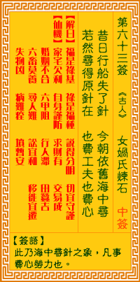

观音灵签第六十三签 【女娲氏炼石】 |
 | |||
昔日行船失了针 今朝依旧海中寻 若还寻得原针在 也费功夫也费心 |
||||
| 【吉凶】 | 下下签 | 【宫位】 | 卯宫 | |
| 【签语】 | 此卦海中寻针之象，凡事费心劳力也。 | |||
| 【解曰】 | 福是禄基 禄是福种 说得分明 切宜守谨 | |||
| 【仙机】 | 此签家宅欠利，自身谨防，求财有，交易成，婚姻不合，六甲阻，行人滞，田蚕吉，六畜莫养，寻人难，讼宜和，移徙宜迁，失物凶，病 难痊，坟暂安。 | |||
| 【详解】 | 从前驾船时遗落了针，现今仍然在海中寻找;如果还能找到原来遗失物的地点所在，一定是费尽了心力与精神啊。 福是福基，福埋福种，说得分明，且宜手拱。此签海中寻针之象，凡事费劳空力。 本签也。海底捞针之象。凡事费劳空力之征。成为如此者。时也命也。不得违之。逞一时之强。却不得任何结果。反而受到不利。甚至吃亏。蚀本之情形出现。福是福基福埋福种。说得分明且宜手拱。 此签有”刻苦磨练”之意。奉劝当事人，勿轻言退缩。须知在下任何决定之前，一定要经过审慎而思密的考虑。尤其当一切都是未知数时，原本就备加困难，本身是否合适、能否发挥，都是必须再三向自我求证的考虑因素。下定决心去做之后，就不要因为过程中必然遭遇的阻碍或不顺遂而心灰意冷，甚至想干脆走回头路。凡事不要轻言放弃，免得最后落得两头皆空，不仅劳心费力，更蹉跎了岁月，实在得不偿失。 | |||
| 【典故】 | 女娲氏是传说中的人物。传说，上古时代，共工氏和祝融氏是天上的二个巨人，有一天，二人打起架来，惊天动地，造成了很大的破坏， 连天也被打破个洞，不停的流下水来。女娲氏是位女神，她在山上拣了许多五色石，用火烧成石浆，把天上的窟窿给补好了。女娲氏拣石补天。上古传说故事。 | |||